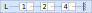

Cours#
La liste chainée ne doit pas être confondue avec la liste python (associée à un tableau dynamique). En Python, chaque élément d’une liste est repéré par son index, c’est à dire sa position dans la liste, comme pour les tableaux.
La liste chainée est une structure de données qui lie ses éléments comme les maillons d’une chaine. Chaque maillon a une valeur et en même temps se trouve relié au maillon suivant.
Exemple
On donne une représentation schématique d’une liste chainée.
{kind=link}
La liste
Lpointe sur un premier maillon de la chaine de valeur 1;Le maillon de valeur 1 pointe sur le maillon suivant de valeur 2;
Le maillon de valeur 2 pointe sur le maillon de valeur 4;
Le dernier maillon ne pointe sur rien; c’est la fin de la liste chainée.
Interface de la liste chainée#
L’interface d’une liste chainée se compose des primitives suivantes:
Créer une liste chainée vide ;
Ajouter un élément en tête de la liste chainée;
Renvoyer la valeur de l’élément en tête de la liste chainée;
Renvoyer la queue de la liste chainée, c’est à dire la liste chainée sans son premier élément;
Tester si la liste chainée est vide;
Implémentation d’une liste chainée#
L’implémentation d’une liste chainée en Python peut être réalisée avec des tuples. Le tuple étant immuable, la liste créée par cette implémentation est non mutable. Une fois créée, on ne peut pas supprimer les éléments, seulement ajouter des éléments en tête de liste. La modification d’une telle liste implique de construire de nouveaux tuples ce qui rend l’implémentation coûteuse en mémoire.
Les fonctions qui assurent l’interface de liste chainée sont:
Le constructeur
creer_liste()qui crée une liste chainée vide, c’est à dire un tuple vide;L’opérateur
inserer(liste, element)qui ajoute un élément en tête de la liste chainée;Les accesseurs
tete(liste)qui renvoie la tête de la liste chainée sans le supprimer etqueue(liste)qui renvoie la liste chainée sans son premier élément;L’accesseur
est_vide(liste)qui teste si la liste chainée est vide.
Note
Une implémentation peut être faite en programmation objet plus efficace en mémoire que celle présentée ici.
Les noms des fonctions peuvent être différents de ceux donnés ici.